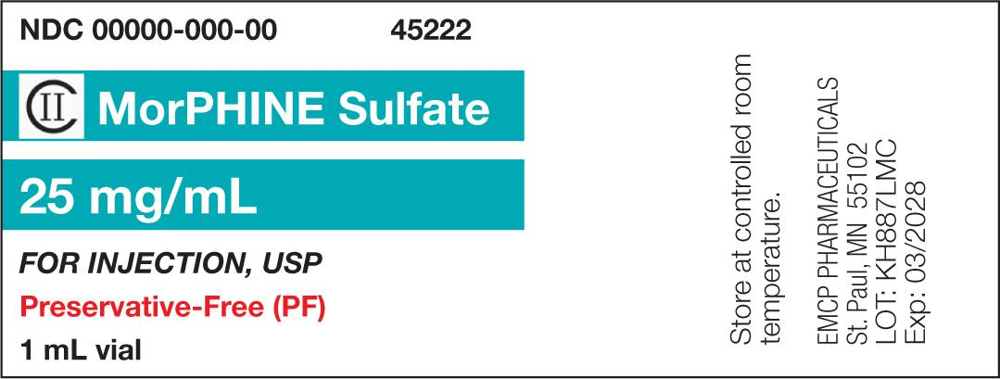
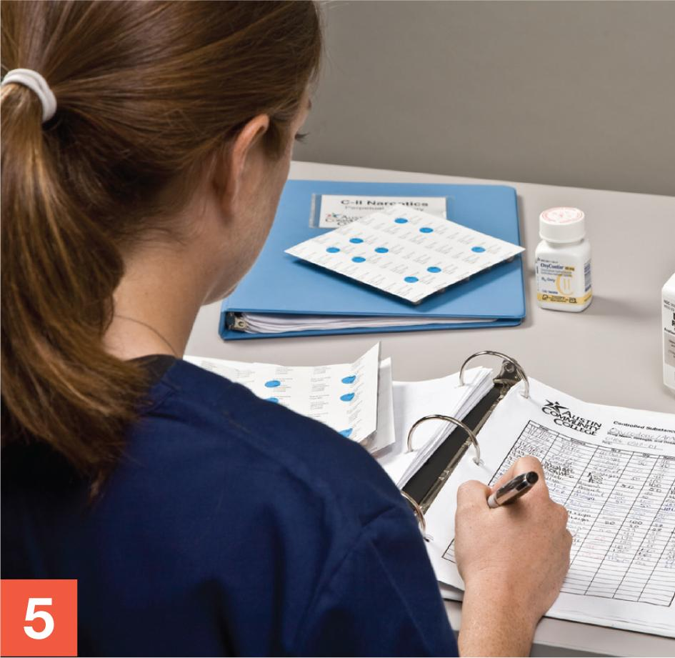
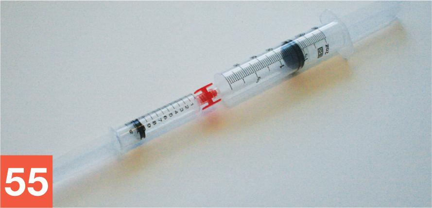

PART 2: TRAINING
13.9 Procedural Lab
This lab walks you through the step-by-step actions that you must follow to properly compound a narcotic analgesic PCA syringe preparation. As with most sterile compounding procedures, there are several ways to prepare a PCA syringe aseptically. The Chapter 13 Procedural Lab presents one possible scenario for PCA syringe preparation and offers you the opportunity to practice using a sterile Luer-to-Luer connector. Take your time. Work through each step methodically and with close attention to detail.
Note: For the purposes of this procedural lab, you will not perform handwashing and PEC cleaning and disinfection procedures unless directed to do so by your instructor. Should your instructor ask you to perform these procedures, refer to Chapter 8 for instructions on handwashing and to Chapter 9 for cleaning and disinfection procedures of a PEC.
Essential Supplies
To complete the Unit 2 procedural labs, you will need to ensure that various essential anteroom and buffer room supplies such as those listed in Table 13.5 are available for your use. If you are using a PEC other than a LAFW, you will need to alter some procedures to account for the type of PEC and the direction of airflow coming from the HEPA filter. In this case, refer to instructor direction or facility SOPs for specific instructions regarding this procedural lab.
Procedure-Specific Supplies
In addition to the supplies listed in Table 13.5, gather the following items specific to the Chapter 13 Procedural Lab:
- perpetual inventory log book containing a controlled-substance record for PF morphine 25 mg/mL, 1 mL vial
- PF NS IVPB, 50 mL bag
- PF morphine 25 mg/mL, 1 mL vial × 2
- regular needles × 2
- 3 mL Luer-lock syringe
- 35 mL Luer-lock syringe
- sterile Luer-to-Luer connector
- sterile 70% IPA swabs, individually packaged × 2
- sterile syringe cap
- tamper-evident, sterile, adhesive seals.
| Anteroom Supplies |
|---|
|
| Note: As mentioned earlier, the Chapter 13 Procedural Lab does not include steps for performing hand hygiene procedures. If your instructor directs you to perform hand hygiene as part of the Chapter 13 Procedural Lab, you will need access to a sink and hand hygiene supplies. Refer to Chapter 8 for details on hand hygiene procedures. Remember that, in practice, you must perform hand hygiene procedures prior to preparing a CSP in a sterile compounding area. |
| Buffer Room Supplies |
|
| Note: As mentioned earlier, the Chapter 13 Procedural Lab does not include steps for cleaning and disinfecting the PEC. If your instructor directs you to do this process as part of the Chapter 13 Procedural Lab, you will need access to PEC cleaning and disinfection supplies. Refer to Chapter 9 for details on PEC cleaning and disinfection procedures. Remember that, in practice, you must clean and disinfect the PEC prior to preparing a CSP. |
Procedure
Take a careful, deliberate approach to each detailed step of this procedural lab. In practice, using this approach helps to ensure an appropriate environment for sterile compounding. Refer to instructor directions or facility SOPs to determine whether goggles are required for the procedure and whether sterile gloves should be donned in the anteroom or buffer room.
Note: For steps 1 and 2 that follow, please refer to Chapter 6 for a reminder of the step-by-step procedures required for medication order and CSP label verification. For steps 3, 4, and 6, refer to Chapter 7 for pharmacy calculation procedures. For step 5, refer to Table 13.4 for proper controlled-substance sign-out procedures. For steps 7–11, refer to Chapter 5 for a reminder of the process for gathering and staging supplies. For steps 12–23, refer to Chapter 8 for step-by-step hand hygiene and garbing procedures. Perform steps 1, 6–21, and 67–69 in the anteroom; perform steps 2–5 in the controlled-substance storage area; and perform steps 22–66 in the buffer room.
Verifying the CSP Label and Obtaining the Narcotic
- Review the CSP label to verify that all of the information on the label matches the medication order. To help you with this task, compare the CSP label (see Figure 13.1) to the medication order and patient ID label (see Figure 13.3). Then bring the CSP label into the controlled-substance storage area.
Note: For training purposes only, you will have access to this area. In practice, only a pharmacist or a specially trained pharmacy technician, commonly referred to as a narcotic technician, may access the controlled-substance storage area.
View long description Hide description
The label reads as follows: P C A syringe, Memorial Medical Center, patient name, room, I D number, and R X number. Preservative-free (PF) morphine 30 milligrams in PF sodium chloride 0.9 percent (NS), total volume: 30 milliliters, final concentration: 1 milligrams per 1 milliliter, for patient-controlled analgesia (PCA) via programmed syringe pump: PCA dose: 1 milligrams, Lockout: 10 min, 1 hour limit: 7 milligrams. Not for direct IV push administration. For P C A use only.This is a compounded preparation. At bottom: B U D, tech, and R P h.
FIGURE 13.1 CSP Label for PF Morphine PCA Syringe: Preservative-free (PF) morphine is a Schedule II narcotic that is commonly ordered to manage moderate-to-severe postoperative pain. This medication is often administered via a PCA syringe pump. © Paradigm Education Solutions
- Look at the CSP label to determine the desired dose of PF morphine, the narcotic analgesic. Find the narcotic analgesic in its storage area. Read the PF morphine drug vial label to determine the concentration needed (see Figure 13.2).

FIGURE 13.2 Label for Morphine Sulfate Drug Vial: The use of tall-man lettering (as shown here) helps to avoid a drug mix-up during the selection process of a controlled substance. © Paradigm Education SolutionsView long description Hide description
The order set shows sections for allergies, no known allergies, nursing instructions regarding patient care, and continuous infusion: PCA to be run through main IV line, and medications.
FIGURE 13.3 Adult PCA Order: Narcotic analgesics delivered by a PCA syringe pump are often used to treat acute postoperative pain and are generally dis-continued within 72 hours after surgery. © Paradigm Education Solutions
Calculating the Desired Narcotic Analgesic Volume
- Perform the calculations based on the narcotic analgesic dose provided on the CSP label and the PF morphine concentration from the vial label. In this example, the narcotic analgesic drug vial label indicates that PF morphine has a concentration of 25 mg per 1 mL. Use the following formula to calculate the dose:
\(\frac{{25\,{\rm{mg}}}}{{1\,{\rm{mL}}}} = \frac{{30\,{\rm{mg}}}}{{x\,{\rm{mL}}}}\)
Cross-multiply and then divide to solve for x (the desired dosage volume) for each dose. In this scenario, the desired dosage volume is 1.2 mL. (For additional assistance, refer to Chapter 7 for step-by-step dosage calculation procedures.)
- Based on the number of milliliters you calculated for the desired dose (1.2 mL) and the volume of the vials you have on hand (1 mL vials), determine how many vials of PF morphine you will need to prepare this dose. In this scenario, you will need two vials to draw up the volume needed for the dose.
Signing Out the Narcotic Analgesic
- Follow the steps outlined in Table 13.4 to sign out the volume of PF morphine that you calculated in step 3. You will need to sign out two 1 mL vials of PF morphine to prepare this CSP.
Note: Due to time constraints, your instructor may direct you to skip this step for the purpose of this training lab. Consult with your instructor to determine the appropriate course of action.

George Brainard/© Paradigm Education Solutions
Calculating the Desired PF NS Volume
- After returning to the anteroom, perform a calculation to determine the volume of PF NS you need to draw up to prepare the CSP. To do so, subtract the volume that you determined in step 3 from the total volume of the PCA syringe—in this case, 30 mL. Given that you determined the CSP requires 1.2 mL of narcotic analgesic, determine the desired volume of PF NS with this simple calculation:
30 mL – 1.2 mL = 28.8 mL (volume of PF NS necessary to prepare the CSP)
Gathering and Staging Supplies
- Place the medication order into a large plastic bag and the CSP label into a small plastic bag. Gather all supply items listed in the Supplies sections of the procedural lab.
- Using one or more low-lint wipers presaturated with sterile 70% IPA, thoroughly wipe down the entire transport vehicle. Then discard the used wiper(s) into the waste container.
- Before crossing into the clean side of the anteroom, use a new, low-lint wiper presaturated with sterile 70% IPA to wipe the surface of the IVPB bag’s dust cover. Place the IVPB bag on the transport vehicle.
- Repeat the procedure outlined in step 9 with each of the remaining supply items.
- Discard the used wipers into the waste container.
Garbing and Transport of Supplies
- Don shoe covers while stepping over the line of demarcation into the clean side of the anteroom.
- Don a head cover.
- Don a face mask.
- Don a facial hair cover (if needed).
- Don goggles for eye protection (if needed).
Note: For the purpose of this training lab, you will skip handwashing, unless told otherwise by your instructor.
- Don a gown.
- Apply an alcohol-based hand rub to all surfaces of your hands and allow your hands to dry thoroughly.
- Don sterile gloves.
- Apply sterile 70% IPA to all surfaces of your gloves and allow your gloved hands to dry thoroughly.
- Use a transport vehicle to bring all supply items into the buffer room.
- Place the transport vehicle onto a table or cart within the buffer room. If a cart is used, position it so that it does not interrupt airflow into the PEC’s prefilter.
- Apply sterile 70% IPA to all surfaces of your gloves and allow your gloved hands to dry thoroughly.
Note: For the purposes of this training lab, you will skip cleaning and disinfecting the PEC, unless told otherwise by your instructor.
Withdrawing Fluid from the IVPB Bag
- Tear open the dust cover of the IVPB bag containing PF NS and remove the bag. Place the IVPB bag into the DCA of the PEC, and discard the dust cover into the waste container. Place the remaining supply items—such as needles, syringes, sterile 70% IPA swabs, and vials—in the outer six-inch zone of the PEC.
- Wipe your gloves with sterile 70% IPA and allow your gloved hands to dry. Then position the injection port of the IVPB bag so that it receives uninterrupted airflow from the HEPA filter. Tear open the package of a new, sterile 70% IPA swab within the DCA and remove the swab. Wipe the injection port of the IVPB bag and then place the IPA swab into the start of a discard pile in the outer six-inch zone.
- Tear open the package of a new, sterile 70% IPA swab within the DCA and remove the swab. Place the IPA swab onto the PEC’s work surface in an area that ensures it receives uninterrupted airflow from the HEPA filter. Place the outer packaging into the discard pile.
- Remove a 35 mL syringe from its outer wrapper and place the wrapper into the discard pile. Prepare the syringe by aseptically removing a capped regular needle from its packaging and attaching the capped needle to the syringe tip. Place the needle’s outer packaging into the discard pile.
- Grasp the barrel of the syringe as you would a dart. Remove the needle cap and place it onto the IPA swab on the work surface. Be sure that the open end of the cap is pointed toward the PEC’s HEPA filter. Stabilize the injection port of the IVPB bag with your thumb and forefinger, and then carefully insert the needle directly into the center of the injection port.
- Allow the IVPB bag to rest on the PEC’s work surface. Firmly grasp the barrel of the syringe and brace it against the PEC’s work surface. Grasp the flat knob of the plunger with your hand and forcefully pull the plunger out of the barrel of the syringe. Be careful that you do not pull so firmly that you remove the plunger from the syringe. Without lifting the IVPB-and-syringe unit from the PEC’s work surface, continue to brace the syringe barrel while simultaneously and steadily maintaining the plunger in this retracted position (similar to the retraction of an arrow within a bow just prior to the release of the arrow). Notice that the fluid from the IVPB bag rapidly transfers into the syringe.
- Continue to hold the plunger in this retracted position until approximately 20 mL of PF NS has been transferred from the IVPB bag into the syringe. Once you have reached that fluid measurement, decrease the intensity of your retraction of the plunger. Continue to gently retract the plunger’s flat knob until approximately 30 mL of PF NS is contained in the syringe.
- Hold the IVPB bag in your hand and the barrel of the syringe in your other hand. While keeping the needle completely inserted in the IVPB bag, use a clockwise motion (a counterclockwise motion if you are left-handed) to invert the IVPB bag so that the needle-and-syringe unit is below the IVPB bag.
- Reposition your hand to hold the syringe barrel. Use your other hand to forcefully tap the syringe barrel to force bubbles up toward the tip of the syringe. Once all of the bubbles have been transferred to the tip of the syringe, slightly pull down on the plunger’s flat knob so that a small pocket (approximately 2 mL) of air is created at the syringe tip. Without re-tapping the syringe barrel, push up on the flat knob to expel the air pocket and excess fluid into the attached IVPB bag.
- Verify that you have the desired volume of PF NS (in this case, 28.8 mL) in the bubble-free syringe. Hold the IVPB bag with one hand and the syringe barrel with your other hand. Using a counterclockwise motion (a clockwise motion if you are left-handed), return the IVPB bag with attached needle-and-syringe unit to the PEC’s work surface.
- Hold the IVPB bag with your one hand; grasp the barrel of the syringe with your other hand, as you would a dart. Carefully remove the needle-and-syringe unit from the IVPB bag. Recap the needle using aseptic technique. Temporarily place the filled-and-capped syringe, along with the partially empty IVPB bag, on the PEC’s work surface within the DCA.
Withdrawing the Narcotic Analgesic Using the Milking Technique
- Place the PF morphine vial within the DCA. Remove the flip-top cap from the vial, and place the plastic cap into the discard pile. Arrange the vial within the DCA so that the vial stopper receives uninterrupted airflow from the HEPA filter. Tear open the package of a new, sterile 70% IPA swab, remove the swab, and wipe the vial stopper. Place the IPA swab on the PEC’s work surface within the DCA.
- Remove the 3 mL syringe from its outer wrapper and place the wrapper into the discard pile. Prepare the syringe by aseptically removing a capped regular needle from its outer wrapper and attaching the capped needle to the syringe tip. Place the needle’s wrapper into the discard pile.
- Pull down on the flat knob of the syringe to draw a volume of air into the syringe equal to or slightly less than the volume you wish to withdraw from the vial (in this lab, 2 mL).
- Grasp the syringe barrel and hold it as you would a dart. Use your other hand to remove the needle cap by pulling it carefully but firmly off the needle. Place the needle cap on top of the IPA swab on the PEC’s work surface. The open end of the cap should point toward the HEPA filter.
- Use your fingers to rotate the barrel of the syringe so that the bevel of the needle points up toward the ceiling.
- Using your other hand, brace the PF morphine vial against the PEC’s work surface. Lay the tip of the needle, bevel up, on the center of the vial stopper.
- Insert the needle into the vial using proper aseptic technique to avoid coring the vial stopper.
- Hold the PF morphine vial with one hand. Hold the syringe, with needle firmly inserted into the vial, with your other hand. Invert the vial using a clockwise motion (a counterclockwise motion if you are left-handed) so that the needle-and-syringe unit is below the vial.
- Use your thumb to gradually push up on the flat knob of the plunger to inject a small amount of air (approximately 1 mL) into the PF morphine vial, creating a slight positive pressure within the vial. Release your thumb from the plunger and allow fluid to flow into the syringe. Repeat this milking process until you have withdrawn slightly more than the desired volume (approximately 2 mL) into the syringe.
- Without removing the bubbles, and while keeping the needle firmly inserted in the vial, use a counterclockwise rotation (a clockwise rotation if you are left-handed) to return the vial and syringe to the original starting position, with the upright vial braced against the PEC’s work surface and your hand holding the syringe barrel. Brace the vial with your hand. Grasp the barrel of the syringe and slowly remove the needle-and-syringe unit from the medication vial. Remember to avoid touching the plunger and flat knob of the syringe at any time while removing it from the vial.
- Tap the barrel of the syringe with your fingers to force air bubbles within the fluid up toward the tip of the syringe. Take care not to bring your hand between the critical site and the HEPA filter at any time.
- Push up on the flat knob of the plunger with your thumb to expel the air bubbles gathered near the tip of the syringe.
- Repeat step 37 (using 0.2 mL of air). Then repeat steps 38–46 using the second vial of morphine.
- Verify that the syringe now contains the desired amount of PF morphine (in this lab, 1.2 mL).
- Carefully recap the needle and place the capped needle-and-syringe unit, now filled with PF morphine, onto the work surface within the DCA.
- Arrange the filled syringe (with attached, capped needle) and the PF morphine vial on the PEC’s work surface within the DCA. Position them adjacent to the PF NS syringe and partially empty IVPB bag. Ask for a verification check by your instructor or a pharmacist.
Transferring the Narcotic Analgesic into the PF NS Syringe Using a Sterile Luer-to-Luer Connector
- Once the verification check has been completed, arrange the filled PF morphine needle-and-syringe unit within the DCA so that it receives uninterrupted airflow from the PEC’s HEPA filter.
- Grasp the PF morphine needle-and-syringe unit in your hand as you would a dart. Twist off the capped needle and temporarily set it near the waste pile. Carefully manipulate the syringe within your hand so that the syringe tip remains pointed toward the HEPA filter and your thumb and forefinger are free to use.
- While keeping the syringe tip pointed toward the HEPA filter, use one hand and the thumb and forefinger of your other hand to carefully peel open the outer wrapper of the sterile Luer-to-Luer connector. Remove the connector from the wrapper, taking care not to touch or shadow either end of the connector at any time during the procedure. Place the outer wrapper into the discard pile.
- Using your thumb and forefinger, twist the PF morphine syringe onto one end of the connector.
- Grasp the barrel of the PF NS syringe. While pointing the open end of the Luer-to-Luer connector toward the HEPA filter, use your thumb and forefinger to twist off and remove the capped needle from the PF NS syringe. Discard the capped needle near the waste pile and the capped needle into the sharps container. Then, using a twisting motion, attach the PF NS syringe to the open end of the Luer-to-Luer connector.

© Paradigm Education Solutions - Invert the syringes, which are connected to each end of the Luer-to-Luer connector, using a clockwise motion, so that the PF morphine syringe is on top of the PF NS syringe.
- Inject the PF morphine into the PF NS syringe by gently pushing down on the flat knob of the PF morphine syringe; simultaneously, pull down on the plunger of the PF NS syringe with your other hand.
- Keep the barrel of the PF morphine syringe inverted so that it is on top of the PF NS syringe. Once all of the morphine has been transferred into the PF NS syringe, tap the barrel of the PF NS syringe to force air bubbles up toward the syringe tip. Once all of the bubbles have been forced to the syringe tip, pull down on the flat knob of the PF NS syringe, creating a small pocket (approximately 2 mL) of air at the tip of the syringe. Gently mix and then carefully expel the air and any excess fluid from the PF NS syringe by gently pushing up on the flat knob until only 30 mL of bubble-free fluid remains in the syringe. Because the PF NS syringe now contains the CSP, the syringe is referred to as a PCA syringe.
- Verify that you have the desired final volume (30 mL) in the PCA syringe:
28.8 mL of PF NS + 1.2 mL of PF morphine = 30 mL
- Temporarily place the PCA syringe, with attached Luer-to-Luer connector and PF morphine syringe, onto the PEC’s work surface within the DCA.
- Aseptically remove the wrapper from a sterile syringe cap while keeping the critical site of the cap positioned within the DCA. Place the outer wrapper from the syringe cap into the discard pile.
- Pick up the PCA syringe with attached Luer-to-Luer connector and PF morphine syringe. Hold the barrel of the PCA syringe as you would a dart. Unscrew the PCA syringe from the Luer-to-Luer connector, set the Luer-to-Luer connector and empty PF morphine syringe on the DCA, and immediately insert the tip of the PCA syringe into the syringe cap. Screw the tip of the syringe into the sterile syringe cap to attach it. Discard the empty PF morphine syringe with attached Luer-to-Luer connector into the sharps container.
- Wipe sterile gloves with sterile 70% IPA and allow to dry thoroughly. Remove a tamper-evident, sterile, adhesive seal from its adhesive backing. Attach one end of the seal to the barrel of the syringe near the point at which the syringe begins to taper toward the syringe tip. Drape the seal across the syringe cap and attach the other end of the seal to the opposite side of the syringe barrel.
- Remove the CSP label from the plastic bag and affix the CSP label to the barrel of the PCA syringe so that it does not cover any of the graduation markings.
Cleaning Up after the Procedure
- Check the used PF morphine syringe and vials to determine if there is a visible, significant amount (typically > 0.5 mL) of narcotic analgesic remaining. If so, remove the Luer-to-Luer connector and have a witness watch you point the tip of the uncapped needle-and-syringe unit into the sharps container and press the syringe plunger to expel the remaining PF morphine into the sharps container. In addition, ask that witness to observe you as you use an appropriately-sized syringe and needle to withdraw any residual contents of the vials and expel the fluid into an appropriate disposal container. Then discard the empty PF morphine syringe with attached Luer-to-Luer connector and the empty vials into the sharps container. In most sterile compounding procedures, however, there will not be a significant amount of remaining fluid in the syringe.
- Discard the partially empty IVPB bag and used IPA swabs into the appropriate waste container. Place the labeled PCA syringe and any remaining supply items into the transport vehicle.
- Return to the anteroom to complete the final procedures. Record the BUD and your initials on the CSP label. Return any supply items to their proper storage locations. Remove your garb according to procedures outlined in Chapter 8.
- Ask for a final verification check from your instructor or the pharmacist.
- Await a directive from your instructor regarding the completed PCA syringe. In practice, you would follow your facility’s protocol and either place the PCA syringe in the proper storage location (refrigerator, shelf, etc.) or deliver the CSP to be administered to a patient.